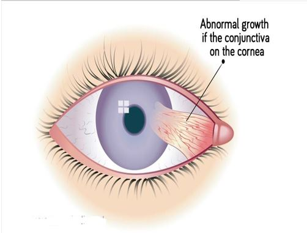
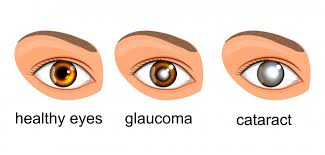
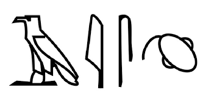
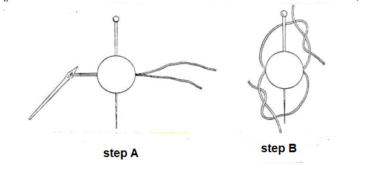
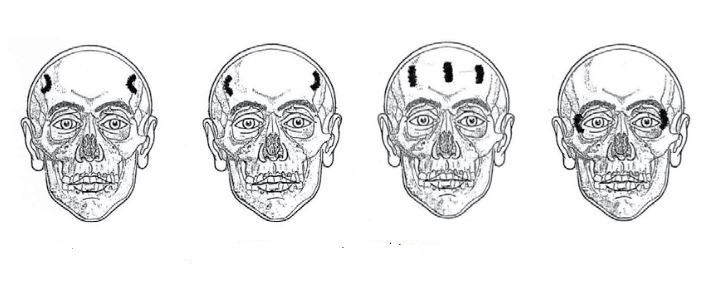

From manuscript page to interface
The catechistic papyri of Greco-Roman Egypt were not random scraps but carefully structured documents. Long before search engines, their authors invented ways to segment, label, classify, tabulate and retrieve medical knowledge. This page unfolds seven of those access forms — beginning with the question-and-answer catechism that gives the genre its name.
Q–A · the catechism (κατήχησις · ἐρωταπόκρισις)
The word catechism — Greek κατήχησις — comes from the verb κατηχέω, “to teach by word of mouth.” Many readers first meet the term in the question-and-answer drilling of the Christian classroom, but the technique is far older and was used in wholly secular settings, medicine among them. The physician-writer Oribasius names it as a method for memorising medical facts, recommending for older students “the practice of lessons … and the catechising of philosophical reasoning” (φιλοσόφων λόγων κατήχησις). By the middle Byzantine period the term was replaced by ἐρωταπόκρισις — literally question-and-answer, from ἀπόκρισις (the answer) and the art of ἐρωτητική (putting questions).
A catechistic medical text is built from sets of a question and its answer. The very first set almost always defines the ailment; the sets that follow take up its types, its causes, its treatment, and so on. On the manuscript page each set is marked off by a παράγραφος (paragraphos) or by indentation (εἴσθεσις), and — the key scribal convention for us — the question is rubricated, set apart so the eye can leap straight to it. The page, in other words, was already an index of retrievable answers.
Here is a real set from P. Aberd. 11, a second-century catechism from the Faiyum on the eye-condition pterygium. The question is shown in the manuscript’s rubric colour:
Τί ἐστιν οὖν τὸ πτερύγιον;
Ἔκφυσις ὑμενώδης αὐξανομένη ἀπὸ τοῦ κανθοῦ ἢ σωματοποιουμένη ἀπὸ τοῦ κερατοειδοῦς χιτῶνος.“So, what is pterygium? — A membranous outgrowth growing from the corner of the eye (the canthus), or taking shape from the cornea.”
P. Aberd. 11 (= MP³ 2342), Fr. A, ll. 2–5 · Faiyum, 2nd c.
A second set on the same fragment immediately asks the follow-up — Τίνες εἰσὶ διαφοραὶ πτερυγίων; “How many are the kinds of pterygium?” — answered by a crisp list of distinguishing criteria: location, size, shape, colour, nature or mode of healing. Question, answer, next question: the structure is self-evidently a retrieval structure.

The modern analogy: prompt → response
Strip the catechism of its parchment and what remains is astonishingly familiar. A rubricated question with its fixed answer is a prompt and its response; a sequence of such pairs is an FAQ; a stack of them is a deck of flashcards. The form survives, almost untouched, in how we interrogate knowledge today: typing a query into a search engine, or putting a question to a large language model, is the same gesture the Faiyum student made — pose the question, retrieve the answer. The catechism is, quite literally, an ancient query interface.
Greek into Arabic: a continuous tradition
The question-and-answer manual did not stop at the edge of the Greek world. It passed, like so much Greek medicine, into Arabic — most famously in Ḥunayn ibn Isḥāq’s al-Masāʾil fī al-ṭibb (“Questions on Medicine”), whose Arabic title, masāʾil, means precisely “questions.” The opening move is the same one the papyri make: define the subject. “What is medicine? — A science by which the states of the human body are known.” The following line is offered only as an illustration of the parallel Arabic tradition, not as a quotation from any single manuscript:
مَا الطِّبّ؟ عِلْمٌ يُعْرَفُ بِهِ أَحْوَالُ بَدَنِ الإِنْسَان.
“What is medicine? — A science by which the states of the human body are known.”
Illustrative of the parallel Arabic masāʾil tradition · cf. Ḥunayn ibn Isḥāq, al-Masāʾil fī al-ṭibb
The five papyri
Five small, battered documents anchor this chapter. None is whole; some are barely a column of legible Greek. Yet between them they map a medical curriculum that reached far beyond Alexandria — from the Faiyum to the Arsinoïte nome to Oxyrhynchus — and show ordinary teachers drilling students in the writings of the great authorities. Each card below names the siglum, the topic, where and when it was found, and which access forms it puts to work.
Greek text & English translation
Τί̣ εστι ο̣υ̣̑ν̣ [τὸ πτερύγιον;]
Ἒκφυσ̣ι̣ς υμενώδης α[υξανομένη απὸ του̑]
κα̣ν̣θου̑ ἢ σωματοποι̣ [ομένη]
5απὸ του̑ κερατοειδου̑ς [χιτω̑νος]
Τίνες [εισὶ διαφοραὶ πτερυγίων;]
Διαφέρεται αὑτω̑ν τ̣ό̣[πῳ , μεγέθει , ]
σχήματι , χρώματ[ι , φύσει ἢ ανα]-
σκευῇ. Χειρ[ουργία του̑ πτερυγίου.]
10Μετὰ τὸν καθέδρειο̣[ν ὄντα τὸν πάσχοντα , εκ]
του̑ οφθαλμου̑ διφ[υη̑ βλέφαρα διαστείλαντες]
τὸ πτερύγιον δι̣[εκφανουμεν αγκι]-
στρίῳ, βελόνην̣ [δὲ λίνον καὶ τρίχα ἱππείαν]
ἔ̣χου̣σ̣α̣[ν
15σεως. [
ματι.[
μεν κα̣ [
λ̣ε̣ιων̣.[
.ν ρει δ̣[ὲ
20[..]..ι̣ [
Membranous outgrowth that develops from the angle of the eye (canthus) or that which takes shape from the cornea.
How many are the different cases of pterygium?
They differ between themselves according to the point in which they develop (location), size, shape, color, nature or healing.
Pterygium surgery.
After the patient is seated, having separated the two eyelids of the eye, we will isolate the pterygium from the eye with a hook, and a needle having a thread of linen and a horsehair……
Greek text & English translation
κλωθεν περι γρ[αφειν. ]
Τινι [τροπῳ το γλαυ]-
κωμα [διαφερει του υ]-
ποχυμ[ατος ; ]
60γ[λ]αυκην , [τ]ο δ[ε υποχυμα]
ἀργου υγ[ρου] ἐστ[ι συστασις]
65κατα τον της [κορης τοπον]
ἐμποδιζουσα τ[ο οραν ἢ το τρα]-
νως οραν. Ἒτι το μεν γλαυ[κωμα ἐστι με]-
τακατασκευη [........της]
κορης ἐκ μελα[ινης χροας]
εἰς
[Τ]ι ἐσ[τι το σταφυ]-
λωμα ;
70Ἒπαρμα κατα τ[ον της κορης]
τοπον ἐμφερω[ς ῥαγί σταφυ]-
λῆς.
Πως γ[ινεται το στα]-
φυλωμ[α ; ]
75Ἤτοι δι ̓ ἀτονιαν [του κερατο]-
ειδους χιτωνο[ς ῥήξεως γε]-
[γ]ενμενης , ἤ δ[ια ῥευματισ]-
μόν πολυχρονει[ον ἔκ]-
λυσιν.
80Τιν[ι διαφερουσι τα]
σ[τ]αφυ[λωματα ; ]
Διαφερου[σι]ν [αυτων μεγε]-
θε[ι], ψρωματι , [φ]υσ[ει, τοπῳ.]
Χειρο[υργια του]
85[σ]τα[φ]υ[λωματος.]
Βελονην δει ὠ[θεῖν δια της]
βασεως του σταφ[υλω σταφ[υλωματος]
ἄνωθεν κατω , [δια δε του ἐν αὐ]-
τῃ ρηγμο[υ] ετε[ραν βελονην]
90διπλουν [ἔχουσαν το λινον
ἀπο μικ[ρου κανθου περι]-
βαλλομε[νοι δε το σταφυλωμα]
[ἀ]ποσφιγγομεν.
Τι ἐστ[ι το πτερυ]-
95γιον΄;
Ἔκφυσις ὑμενώ[δης ἀπο του]
κανθου ηὐξημέ[νη. ]
Πω[ς γινεται το]
π[τερυγιον ;]
100Ἤτοι [σ]αρκος αὔ[ξησις της]
ὑπό του κανθο[υ μεν σωματο]-
ποιουμενου , γ[ινεται δε και]
ὑπό του κερατοειδους χιτω]-
νος
105Τ[ίνι διαφέρουσι τὰ]
π̣[τερύγεια; ]
Διαφέρου̣[σιν αὑτῶν μεγέ]-
θει, σχήμα[τι, τόπῳ, χρωμάτι]
ἢ φύσει.
110χ[ειρουργία τοῦ]
[πτερυγείου]
Διαστείλα̣[ντες τὰ βλέφαρα, τὸ]
πτερύγει[ον ἀγκίστρῳ ἐκ τοῦ]
ὀφθαλμοῦ [ἀναδεξάμενοι]
115διεκφ̣αν̣[οῦμεν.]
C0l.III
μ[ των ῥ]ευμα-
τ[ι]σμ[ῶν]
χρονιων ὄντων ἔκλη-
ψις των κ[ατ]α την ἐπιφ[α]-
120[ν]ειαν ἀγγειων και δια [π]υ[ρη]-
νοειδων καυτηρι[ω]ν κ[αυ]-
[σ]ις.Ἐνίοτε δε και ἀποσφ[ιγ]-
[ξ]ις και ἐκτομη.
τρόπος ὑπο[σ]π[α]-
125θισμου.
How is the glaucoma different from the cataracts?
Furthermore, glaucoma is a change (?) in the black color of the pupil to light blue, while the cataract is a whitish accumulation in the aqueous humour of the pupil, which prevents seeing or see clearly.
What is the staphyloma?
A growth near the pupil, similar to a grape.
How does the staphyloma occur?
Due to a debilitation of the cornea, having a rapture occurred in (?), or due to secretions that have lasted for a long-time causing weakening
How do staphyloma cases differ?
They differ in size, color, nature and location.
Surgery of the staphyloma.
Pierce the base of the staphyloma with a needle, from top to bottom, and pass double thread through the incision with another needle in the canthus enveloping the staphyloma.
What is the pterygium?
It is a membranous excrescence growing from the canthus.
How does pterygium develop?
It is a growth of flesh takes wing shape starting from the canthus, but also starts from the cornea.
How do the pterygium’s kinds differ?
They differ in size, shape, location, color or nature.
Surgery of pterygium.
Separate the eyelids with a hook, and isolate the pterygium from the eye.
……secretions (ophthalmic).
If they are chronic, isolate the superficial vessels and cauterize them with the cautery "in the shape of a kernel ".
Sometimes (also necessary) ligation and removal. Made (to operate) the hypospathismos.
Greek text & English translation
]δεν
[τί ἐστι τὸ ὑγρὸν ὅν]
[ἔν τινι μέρει τῆς κεφ]α̣λῆς;
5[τὸ πάθος προσαγορεύεται] ὑδροκέ [φαλον]
[διὰ τὸ ὑγρὸν ἐν κεφαλῇ συ]λλεγόμενον·
[πόσαι αἱ διαφοραὶ τῶν ὑδρ]ο̣κεφάλων ;
[τέσσαρες ἢ γὰρ μεταξὺ τοῦ] δέρματος καὶ
[περικρανίου ἤ καὶ ὀ]σ̣τ̣οῦ ἢ μεταξύ
10ὀστοῦ καὶ μήνιγγος ἤ ἐγ]κεφάλου.
πόσαι εισι] αι [αιτι]α[ι] ;
]ποστειν [
λε]γεται την συλλο-
γην ειναι εξ αδηλου αιτια]σ η εκ πρ[ο]δηλου
15]τατον τοπον αγη
]μεταβαλοντος σ ει[ς]
]ευρισκεται τα ουλ[α]
] αθεραπευτος .
]τερηδων
20]τερηδων[
[The disease is called] hydrocephalus because of the moisture being collected in the head.
[How many are the different types] of hydrocephali?
[Four: either between] the scalp and [the pericranium, or between the pericranium and] the skull, or between [the skull and the meninges, or [between the meninges and the] brain.
How many are the causes?
… It is said that the accumulation [exists from either an unclear cause or from a clear one. … the most … place …, with [the fluid?] turning toward ?..., it is discovered that the gums … . … is untreatable.
[What is] teredon ? … teredon [
Greek text & English translation
Greek text & English translation
τὰ ὦτα \ ̣/
ἐλεφαντι]άσεως
5[. . . . ]ων αἰτίαν οἱ μ[ὲν . . . . ]
[ . . . . . ]πη χυμῶν τ̣[ . . . . ]
[ . . . . κ]ατὰ δὲ τοὺς Μ[εθοδικοὺς . . . . ]
[ . . . . . κα]τ̣ὰ φύσιν εἰς τ̣[ . . . . ](*)
[ . . . . θεραπεύ]ειν τοὺς ἐλε[φαντιῶντας; . . . . ]
10[ . . . . ἰατρ]ῶ̣ν ἀπηγόρευ[σαν](*) [ . . . ]
[ . . . . . ]κατασκευη̣[ . . . . ]
[ . . . . ] ̣ ἐν γὰρ φλεβοτομί̣α̣[ι . . . . ]
[ . . . . . . ] ̣ τὴν δὲ ἐνκεχρονισ̣[μένην . . . . . ]
[ . . . . ] ̣ω· δρώπακας γὰρ καὶ παροπτ̣[ήσεις . . . . ]
15[ . . . . ] ἀπὸ ῥαφα[ν]είδων ἔμετον κ[αὶ . . . . ]
[ . . . παρ(?)]αλαμβάνομεν(*). τὰ γὰρ μεγάλα̣ [ . . . . ]
[. . ιc]χυραc δειται θεραπειαc. 𝈠 [ (ωαψ.) ]
[cτρ]οφηc προcωπου και καταφορ[αc ±6 ]
20[ . . . .]μενηc. . 𝈠 τιc αἰτια ἀπο[πληξιαc; κα- ]
[τ’ Ἀc]κληπιαδην cυνεκτικη ἐcτι[ν ἡ ἔνcταcιc]
[των] ὄγκων ἐν λογῳ θεωρητοι[c ποροιc κα-]
[τα τα ] νεῦρα, δι’ ἣν αἰτιαν ἐνκριν[ει ± 8]
[ . . . . ]ν γινεcθαι τηc παρεcεωc κ[ατα δε ±5]
25[ . . . . .]. ἔνχρονοc τυλωδεια των π[
What is the cause of apoplexy? According to Asclepiades, the cohesive (cause) is [obstruction] of the corpuscles in [pores] intelligible to reason [in the] nerves, through which cause, …. he judges [....] of paralysis to occur. According to [N.] (the cause is) a chronic callosity of the ..."
10[ . . . . . . . . ]τιον ἔφαcαν γινεc[θαι αὐτην ὑπο]
[φλεγματικωτε]ρων ὑγρων και δρειμ[εω]ν [περι]
[των κατ ̓ ἴcχια] μυων κατα δε Ἀcκληπιαδην [cυ-]
[νεκτικη ἡ των] λογῳ θεωρητων ὄγκων ἐνc[τα-]
[cιc κατα το]υc ψοειταc μυαc. οἱ δε Μεθοδ[ικοι]
15[. . . . . . . . . . . . .]αντο. 𝈠 τινα [c]ημεια ἰ[c]χια[δοc ;]
The seven access forms
The catechism is one form among several. Working through the same handful of papyri, we can isolate seven distinct techniques for making knowledge findable. The Q–A form above is the first; the six that follow each get their own anchor, a modern analogy, one real Greek example with translation, and the figure or table that brings it to life.
Lists
Function: segmenting knowledge into discrete, individually retrievable items. Modern analogy: data chunks, bullet points, an indexed inventory. A list converts a flowing description into countable units the reader can pick out one at a time.
When P. Aberd. 11 reaches the pterygium operation, it does not describe the toolkit in prose — it enumerates it. From the catechism’s own instrument-set (Table 2 of the chapter):
- ἄγκιστρον / ἀγκίστριον — surgical hook
- βελόνη — needle
- λίνον — thread of linen
- τρίχα ἱππείαν — horsehair
Instruments enumerated for the pterygium operation, P. Aberd. 11.
A second list-form is anatomical: the same chapter sets out the four soft- and hard-tissue layers of the head — scalp, pericranium, skull, meninges, brain — as discrete planes between which fluid may gather. That enumeration is exactly what makes the classification of hydrocephalus (below) possible. The list is the raw material every other form refines.
Headings & definitions
Function: labelling a term and fixing its meaning with a short gloss. Modern analogy: a glossary, a key–value pair, a tooltip. Every catechism opens with a definition because a defined term is a handle — once named, a thing can be filed, cross-referenced and retrieved.
The papyri are especially fond of etymological glosses, where the name itself explains the disease. Three from this chapter:
And the defining question itself is preserved verbatim. P. Ross.Georg. I 20 asks and answers in a single breath:
Τί ἐστι τὸ σταφύλωμα; — Ἔπαρμα κατὰ τὸν τῆς κόρης τόπον ἐμφερῶς ῥαγὶ σταφυλῆς.
“What is the staphyloma? — A growth near the pupil, similar to a grape.”
P. Ross.Georg. I 20, Col. II, ll. 68–72

Classifications
Function: sorting a phenomenon into types and sub-types by a stated criterion. Modern analogy: a taxonomy, a decision tree, a set of categories. Where the list enumerates and the definition labels, the classification organises — it imposes a branching order on a field of cases.
The finest example is the only papyrus to treat hydrocephalus, P. Ct Y-BR. Its second question asks how many kinds there are; the answer divides the condition by where the fluid collects, working inward from skin to brain through the four tissue planes of the head:
| # | The fluid gathers between… | Greek |
|---|---|---|
| α | the scalp and the pericranium | μεταξὺ τοῦ δέρματος καὶ περικρανίου |
| β | the pericranium and the skull | μεταξὺ περικρανίου καὶ ὀστοῦ |
| γ | the skull and the meninges | μεταξὺ ὀστοῦ καὶ μήνιγγος |
| δ | the meninges and the brain | μεταξὺ μήνιγγος καὶ ἐγκεφάλου |
“How many are the different types of hydrocephali? — Four: either between the scalp and the pericranium, or between the pericranium and the skull, or between the skull and the meninges, or between the meninges and the brain.”
P. Ct Y-BR, ll. 7–10 · Arsinoïte nome, late 2nd–early 3rd c.
This four-fold scheme is not the teacher’s invention. The Pseudo-Galenic Introductio sive medicus (19) classifies hydrocephalus the very same way — ὑδροκεφάλων δὲ εἴδη τέσσαρα, “there are four kinds of hydrocephalus” — proof that a humble Faiyum-region classroom was drilling students straight out of the Galenic mainstream. The classification is a decision tree: locate the fluid, and the type (and, with it, the prognosis and surgery) follows.

Tables
Function: arranging data in parallel rows and columns for direct comparison. Modern analogy: a spreadsheet, a relational table, a concordance. A table lets the eye travel across sources rather than down a single one.
The chapter itself builds a concordance of one humble instrument — the surgical needle, βελόνη — recording every papyrus in which it appears and the medical topic that occasioned it. It is named four times, in four documents (Table 3 of the chapter):
| Papyrus | Classification | Medical topic |
|---|---|---|
| P. Aberd. 11 | Ophthalmic catechism | Pterygium and its surgical treatment. |
| P. Ross.Georg. I 20 | Ophthalmic catechism | Glaucoma, staphyloma and pterygium. |
| P. Giss. Univ. IV | Surgical papyrus | Surgical treatment of coloboma. |
| P. Genav. inv. 111 | Surgical catechism | Definition of surgical instruments — including the βελόνη itself. |
Read as a table, the four scattered mentions become a single piece of evidence: the needle was standard equipment across both ophthalmic and general surgery, and the surgical catechism P. Genav. inv. 111 fixes its very meaning. No one papyrus says this; the table does. This is the move a database makes — turning isolated records into a queryable whole.
Recipes
Function: step-by-step procedures — surgical operations and compound-drug formulas. Modern analogy: an algorithm, a workflow, a numbered procedure. A recipe encodes how, in order, so it can be executed the same way every time.
P. Aberd. 11 closes with the pterygium operation. Though the lines are damaged, the sequence is clear — and it matches, almost step for step, the procedure later written out by Aëtius of Amida:
Μετὰ τὸν καθέδριον ὄντα τὸν πάσχοντα, … διαστείλαντες τὰ βλέφαρα, τὸ πτερύγιον ἀγκιστρίῳ διεκφανοῦμεν, βελόνην δὲ λίνον καὶ τρίχα ἱππείαν ἔχουσαν…
“With the patient seated, having parted the two eyelids of the eye, we isolate the pterygium from the eye with a hook; and a needle bearing a thread of linen and a horsehair…”
P. Aberd. 11, Fr. A, ll. 10–14
The procedure reads as a numbered workflow:
- Seat the patient — καθέδριος, the same sitting posture preferred for shoulder dislocations.
- Part the eyelids — διαστείλαντες τὰ βλέφαρα.
- Lift the growth clear of the eye with the hook — ἄγκιστρον.
- Pass the needle — βελόνη — carrying linen thread (λίνον) and a horsehair (τρίχα ἱππείαν) beneath the base.
The companion papyrus P. Ross.Georg. I 20 preserves the parallel operation for staphyloma — ligation, ἀπόσφιγξις — in which a threaded needle is driven through the base of the growth from top to bottom and the staphyloma is bound off and made to fall away. The figure below reconstructs that ligation after Paul of Aegina.

Diagrams & branching schemes
Function: visual schemata and decision paths that map relations and procedures in space rather than in a line of text. Modern analogy: a flowchart, a decision tree, a mind-map. A diagram externalises the branching a reader would otherwise have to hold in mind.
The third column of P. Ross.Georg. I 20 names — but, being a text, can only name — an operation that is inherently spatial: the hypospathismos (ὑποσπαθισμός), in which incisions are made through the skin of the forehead and a spatula is passed beneath it to treat chronic eye-disease and chronic migraine. Reconstructed as a schematic, the operation becomes legible at a glance — which incision, in which position, for which case:

A branching scheme does for reasoning what this diagram does for an operation. The classification of hydrocephalus above is, in effect, a four-way branch — “where is the fluid?” splitting into four outcomes — and the catechism’s own definition → causes → types → treatment sequence is a decision path the student walks every time. To draw such schemes out as trees and flows is simply to make their branching visible. The same branching habit carries into the Arabic tradition, which imagined a whole shajarat al-ṭibb, a “tree of medicine,” running from disease to cause to sign to cure — an image offered here only as illustrative of that parallel tradition, not as a quotation from any one manuscript.